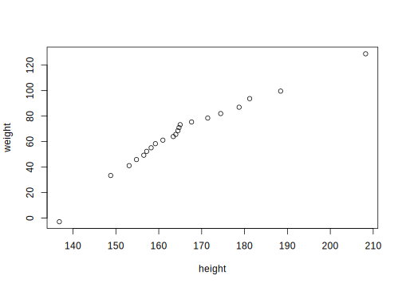
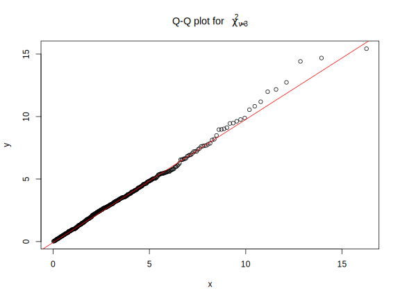

11.1 Q-Q plot
Q-Q plot = Quantile(분위수)-Quantile(분위수) plot
11.1.1 분위수(Quantile)
정의
- 확률분포를 동등한 확률 구간으로 나누기 위해 설정한 구분점(cutpoint)
- 특정 확률분포의 누적분포함수의 역함수
- 주어진 표본의 관찰값을 오름차순으로 나열했을 때 전체 표본(데이터)을 특정 개수의 그룹으로 나눌 때 기준이 되는 값
- \(q\) 분위수는 \(q-1\) 개의 분위수 값을 갖음
- 예시
- 2-quantile: 오름차순으로 정렬한 데이터를 50:50으로 나누기 위한 값 \(\rightarrow\) 중앙값(median)
- 3-quantiles (tertiles): 오름차순으로 정렬한 데이터를 3 등분 하기 위한 값 \(\rightarrow\) 33.3 %, 66.6 %
- 4-quantiles (quartiles): 오름차순 정렬 데이터를 4등분 하기 위한 값 \(\rightarrow\) 25 % (Q1), 50 % (중앙값), 75 % (Q3)
- 사분위수 범위(interquartile range, IQR): Q3 - Q1
- 10-quantiles (deciles): 오름차순 정렬 데이터를 10 등분 \(\rightarrow\) 10 %, 20 %, 30 %, …, 90 %
- 100-quantiles (percentiles): 오름차순 정렬 데이터를 10 등분 \(\rightarrow\) 1 %, 2 %, …, 99 %
- 일반적으로 \(k^{\mathrm{th}}\) \(q\) 분위수는 누적확률분포에서 \(k/q\)의 값을 갖는 데이터를 의미
(표본)분위수의 계산
R에서 표본 분위수는 quantile() 함수룰 통해 구할 수 있으먀, 크게 불연속 변수(discontinuous variable)와
연속 변수(continuous variable)에 따라 방법이 조금씩 달라짐. 불연속변수인 경우 데이터 중에서
분위수 값을 정의하는 반면 연속변수인 경우 보간(interpolation)을 사용해 분위수 값을 정함. R은 총 9 가지의 분위수 계산 방법을 제공하며, 방법 1 ~ 3은 불연속 변수,
방법 4 ~ 9 는 연속 변수를 대상으로 함.
표본 분위수는 순서통계량(order statistics)13의 가중평균으로 정의하며 임의의 표본이 주어졌을 때 \(p \times 100\) % 분위수 계산 식14은 아래와 같음(연속 변수에 대해)
\[ Q(p) = (1 - \gamma) x_{(k)} + \gamma x_{(k+1)} \]
이고, 여기서 \((k - 0.5)/n \leq p < (k - 0.5 +1)/n\), \(x_{(k)}\)는 \(k\) 번째 순서통계량, \(n\)은 표본크기, \(\gamma = np + m - k\), \(k\)는 \(np + m\)을 넘지 않는 최대 정수이고 \(m = 1/2\) 임.
- 예시
# 분위수 계산 함수
my_quantile <- function(x, probs) {
idx <- NULL
o <- order(x); n <- length(x)
xord <- x[o]
k <- 1:n
gamma <- n * probs + 0.5 - floor(n * probs + 0.5)
pk <- (k - 0.5)/n
for (pj in probs) {
idx <- c(idx, which.max(pk[pk <= pj]))
}
res <- (1 - gamma) * xord[idx] + gamma * xord[idx + 1]
names(res) <- sprintf("%.1f %%", round(probs * 100))
return(res)
}
set.seed(10)
x <- rnorm(373)
my_quantile(x, probs = c(0.05, 0.95)) 5.0 % 95.0 %
-1.601323 1.492466 # 확인
quantile(x, probs = c(0.05, 0.95), type = 5) 5% 95%
-1.601323 1.492466 Quantile-Quantile plot (Q-Q plot)
- 두 변수 \(X\)의 분위수와 \(Y\)의 분위수를 산점도 형태로 그린 도표로 두 변수의 분포를 비교하기 위한 용도로 사용되는 도표
- 예시
- \(X\): 충남대학교 정보통계학과 남학생의 키
- \(Y\): 충남대학교 자연과학대학 남학생의 몸무게
# 개념
set.seed(1234)
x <- rnorm(50, 172, 15)
y <- rnorm(500, 65, 20)
xq <- quantile(x, probs = seq(0, 1, by = 0.05))
yq <- quantile(y, probs = seq(0, 1, by = 0.05))
plot(xq, yq,
xlab = "height",
ylab = "weight")
일반적으로 측정 또는 표집한 연속형 변수가 이론적인 특정 분포와 얼마나 유사한지를 확인하기 위해 사용하며, 특히 데이터의 정규성 검정에 많이 활용됨. 즉 표본으로 얻은 분포가 정규분포를 따르는지(유사한지)를 알아보기 위해 활용
보통 x 축은 theoretical quantile (이론적 분위수)로 하고 y 축은 표본 분위수(empirical/sample quantile)로 설정
R에서 Q-Q plot은
qqnorm(),qqplot()등의 함수를 사용해 간단히 그릴 수 있으나 해당 함수를 사용하지 않고 직접 그리는 방법에 대해 알아봄.
# 위 예제에서 생성한 충남대학교 여학생 몸무게의 Q-Q plot
# 정규분포와 비교
yord <- y[order(y)] # 데이터 정렬
n <- length(yord)
k <- 1:n
pk <- (k - 0.5)/n
# theoretical quantile
tq <- qnorm(pk, 0, 1) # 표준정규분포의 분위수
# empirical quantile
eq <- drop(scale(yord)) # z 변환
par(mfrow = c(1, 2))
plot(x = tq, y = eq,
type = "n",
xlim = c(-3.5, 3.5),
ylim = c(-3.5, 3.5),
xlab = "Theoretical Quantile",
ylab = "Empirical Quantile",
main = "Normal Q-Q plot (manual)")
points(tq, eq, pch=16, cex = 1, col = "darkgray")
points(tq, eq, pch=21, cex = 1, col = "black", lwd = 1)
abline(a = 0, b = 1)
# qqnorm() 함수 결과와 비교
qqnorm(eq, xlim = c(-3.5, 3.5), ylim = c(-3.5, 3.5))
qqline(eq)데이터의 정규성을 확인하기 위한 검정 방법으로 대표적으로 Kolmogrov-Smirnov test, Shapiro-Wilk test, Anderson-Darling test, Cramer-von Mises test 등이 일반적으로 많이 사용되지만, 표본의 크기가 커질 경우 검정력이 높아지기 때문에 귀무가설인 “데이터가 정규분포를 따른다”를 기각할 확률이 높아짐. 그렇기 때문에 정규성 검정과 동시에 Q-Q plot을 통한 데이터의 분포 확인이 필요함.
Q-Q plot의 형태
- 정규분포를 기준으로 Q-Q plot의 형태를 통해 표본자료의 데이터 분포 유추가 가능.
- 예를 들어 표본 분위수를 \(Q_E\), 표준정규분포의 분위수를 \(Q_T\)라고 할 때
- \(Q_E < Q_T\): 이론적 분위수보다 표본 분위수가 작다 \(\rightarrow\) 직선을 기준으로 오른쪽에 점 위치

- \(Q_E > Q_T\): 이론적 분위수보다 표본 분위수가 크다 \(\rightarrow\) 직선을 기준으로 왼쪽에 점 위치
대칭이지만 표본데이터의 분포 꼬리가 표준정규분포에 비해 얇은 경우
# X ~ U(-2, 2)
set.seed(100)
x <- runif(10000, -2, 2)
par(mfrow = c(1, 2))
qqnorm(scale(x), pch = 16, cex = 1, col = "darkgray")
qqline(scale(x))
plot(density(scale(x)),
xlim = c(-3, 3),
ylim = c(0, 0.4),
lwd = 1.5, col = "red",
main = "Light tailed distribution: X ~ U(-2, 2)")
z <- seq(-3, 3, by = 0.01)
lines(z, dnorm(z), lwd = 1.5, col = "black")
legend("topright", legend = c("Theoretical N(0, 1)", "Estimated density of the sample"),
lty = 1, lwd = 1.5, bty = "n",
col = c("black", "red"))대칭이지만 표본데이터의 분포 꼬리가 표준정규분포에 비해 두꺼운 경우
# 자유도가 8인 t 분포
set.seed(100)
x <- rt(10000, df = 8)
par(mfrow = c(1, 2))
qqnorm(scale(x), pch = 16, cex = 1, col = "darkgray")
qqline(scale(x))
plot(density(scale(x)),
xlim = c(-6, 6),
ylim = c(0, 0.5),
lwd = 1.5, col = "red",
main = "Heavy tailed distribution: X ~ t(df = 3)")
z <- seq(-6, 6, by = 0.01)
lines(z, dnorm(z), lwd = 1.5, col = "black")
legend("topright", legend = c("Theoretical N(0, 1)", "Estimated density of the sample"),
lty = 1, lwd = 1.5, bty = "n",
col = c("black", "red"))표본데이터가 표준정규분포에 비해 오른쪽으로 치우쳐진 경우(skewed to the right)
# exp(lambda = 3)
set.seed(100)
x <- rexp(10000, rate = 3)
par(mfrow = c(1, 2))
qqnorm(scale(x), pch = 16, cex = 1, col = "darkgray")
qqline(scale(x))
plot(density(scale(x)),
xlim = c(-3, 6),
ylim = c(0, 0.8),
lwd = 1.5, col = "red",
main = "Skewed to the right: X ~ exp(lambda = 3)")
z <- seq(-3, 6, by = 0.01)
lines(z, dnorm(z), lwd = 1.5, col = "black")
legend("topright", legend = c("Theoretical N(0, 1)", "Estimated density of the sample"),
lty = 1, lwd = 1.5, bty = "n",
col = c("black", "red"))표본데이터가 표준정규분포에 비해 왼쪽으로 치우쳐진 경우(skewed to the left)
# X ~ beta(4, 1)
set.seed(100)
x <- rbeta(10000, shape1 = 4, shape2 = 1)
par(mfrow = c(1, 2))
qqnorm(scale(x), pch = 16, cex = 1, col = "darkgray")
qqline(scale(x))
plot(density(scale(x)),
xlim = c(-5, 4),
ylim = c(0, 0.6),
lwd = 1.5, col = "red",
main = "Skewed to the left: X ~ beta(4, 1)")
z <- seq(-4, 4, by = 0.01)
lines(z, dnorm(z), lwd = 1.5, col = "black")
legend("topright", legend = c("Theoretical N(0, 1)", "Estimated density of the sample"),
lty = 1, lwd = 1.5, bty = "n",
col = c("black", "red"))qqnorm()은 이론적인 표준정규분포와 표본 데이터의 분포를 비교하기 위한 함수이고, 다른 분포(\(\chi^2\) 분포, \(t\) 분포 등)와 비교하기 위헤서는qqplot(x = theoretical, y = empirical)를 사용해 Q-Q plot 생성 가능
# 카이제곱분포의 Q-Q plot
set.seed(100)
y <- rchisq(500, df = 3)
x <- qchisq(ppoints(500), # 500 quantiles 생성
df = 3)
qqplot(x, y,
main = expression("Q-Q plot for" ~~ {chi^2}[nu == 3]))
qqline(y, distribution = function(p) qchisq(p, df = 3), col = "red")
Application
- 실제 데이터로부터 정규성 확인을 위헤 Q-Q plot 생성
ggpubr패키지에서 제공하는ggqqplot()함수를 통해 Q-Q plot 생성
ggpubr: 논문이나 출판을 위해 high-quality 도표를 생성하기 위한 목적으로 “ggplot based Publication Ready plots”의 약어를 이름으로 갖는 패키지
- R에서 제공하는
iris데이터셋 활용 tidyverse세계에서 데이터 전처리 및 Q-Q plot 출력
# 각 붓꽃 종과 측정 변수에 따른 Q-Q plot 생성
# install.packages("ggpubr")
# require(tidyverse)
# require(ggpubr)
iris_tb <- as_tibble(iris)
iris_tb %>%
rownames_to_column %>% # 데이터프레임 행이름을 변수로 변환
pivot_longer(cols = matches("Sepal|Petal"),
names_to = "Measures") %>% # long-format으로 변환
group_by(Species, Measures) %>%
mutate(zvalue = drop(scale(value))) %>% # 정규성 확인을 위해 각 변수의 종별 표준화
ungroup %>%
ggpubr::ggqqplot(x = "zvalue",
color = "Species",
facet.by = c("Species", "Measures"),
palette = c("#00AFBB", "#E7B800", "#FC4E07"),
ggtheme = ggpubr::theme_pubclean(base_size = 15)) 
그래프 생성 시 원하는 색에 대한 코드를 쉽게 추출하고 싶다면 colourpicker 패키지를 설치해 보자.